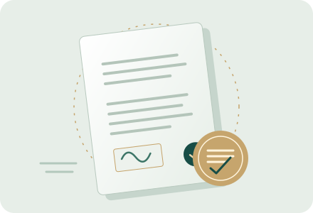

تناسب با شرایط واقعی
فرم نمونه نقطه شروع است؛ موضوع، تعهدات، زمانبندی و وضعیت طرفین ممکن است به اصلاح متن نیاز داشته باشد.
کتابخانهای برای کشف، بررسی و دسترسی منظم به نمونه قراردادها و فرمهای خام؛ با دستهبندی روشن، راهنمای انتخاب و شناسنامه هر سند.
دستهای را انتخاب کنید تا به فهرست اسناد و فرمهای مرتبط برسید.
خریدوفروش، اجاره، مشارکت در ساخت و خدمات ملکی
←استخدام، همکاری مستقل، محرمانگی و تسویه
← 03
03فروش، پیمانکاری، مشاوره و همکاری تجاری
←توسعه نرمافزار، خدمات دیجیتال و داده
← 05
05خریدوفروش، اجاره، حمل بار و خدمات ناوگان
←سرمایهگذاری، شراکت، قرض و تسویه بدهی
←
هر نمونه باید با توضیح روشن، نوع سند، وضعیت دسترسی و اطلاعات نسخه معرفی شود. این ساختار کمک میکند میان یک فرم خام، نمونه تکمیلشده و سندی که نیازمند بررسی تخصصی است تفاوت بگذارید.
راهنمای انتخاب و استفاده ←فرم نمونه نقطه شروع است؛ موضوع، تعهدات، زمانبندی و وضعیت طرفین ممکن است به اصلاح متن نیاز داشته باشد.
تاریخ، منبع و وضعیت بازبینی را بررسی کنید. عنوان مشابه به معنی یکسانبودن مفاد یا اعتبار نیست.
پیش از اشتراکگذاری هر سند، اطلاعات هویتی، مالی و تماس اشخاص را با دقت بررسی کنید.
پیشنهاد موضوع یا اصلاح دستهبندیها به کاملتر شدن کتابخانه کمک میکند.